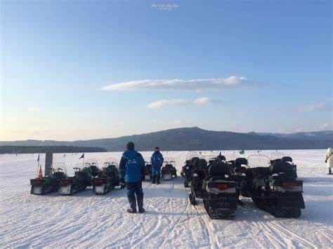
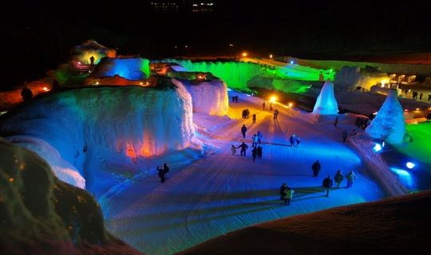
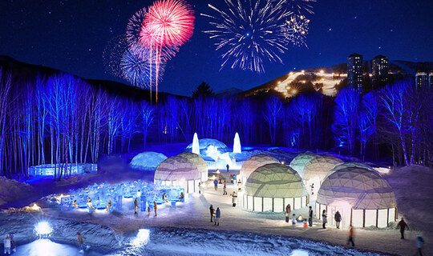
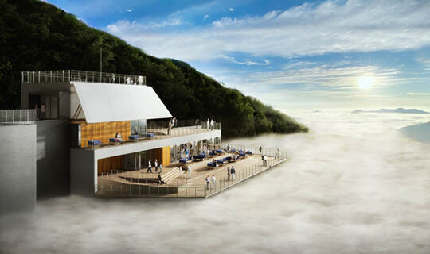
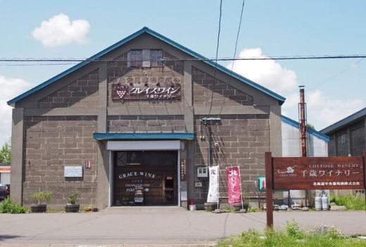
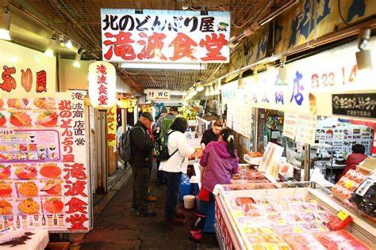

PRIVATE JOURNEY日本・北海道
Hokkaido北海道 冰雪之旅
破冰船劈開鄂霍次克流冰，星野 TOMAMU 的愛絲冰城在夜裡發光，三大冬祭典與螃蟹御膳——北海道的冬天，值得一次全家出動。
天數八天七夜
季節冬季專屬
主題流冰・冰城・溫泉・冬祭
形式私人包團
破冰船劈開鄂霍次克流冰，星野 TOMAMU 的愛絲冰城在夜裡發光，三大冬祭典與螃蟹御膳——北海道的冬天，值得一次全家出動。
季節限定的鄂霍次克流冰奇觀，破冰前行的隆隆聲響只屬於冬天。近距離在流冰館見到透明的流冰天使 Clione。
愛絲冰城、安藤忠雄水之教堂、木葉之湯露天溫泉——北海道最具代表性的頂級渡假村，一次走進。
冰上釣公魚現炸天婦羅、香蕉船、雪上摩托車——結冰湖面上的一整天，是孩子與大人都難忘的冬日記憶。
層雲峽冰瀑祭、支笏湖冰濤祭、阿寒湖冬華美，加上夜間螃蟹御膳——用最道地的方式過一個北海道的冬天。
從十勝川溫泉出發，橫越道東流冰海岸，深入道央的星野渡假村，再沿著支笏湖、小樽運河一路回到札幌——八天走過北海道最精華的冬日版圖。

啟程・直奔美人湯
桃園機場直飛新千歲，抵達後直驅十勝川溫泉。放眼全球，只有德國 BADEN 和日本十勝川擁有「植物性 MOOR 溫泉」，浸泡後肌膚光滑細緻——第一晚就把旅途的疲憊泡掉。

蒸汽火車・冰湖上的一天
搭乘充滿懷舊風情的釧路 SL 冬季濕原號，在雪白原野上緩行；抵達阿寒湖後，漫步幸運之森商店街，午後投入冰上活動的歡樂——冰上釣公魚現炸天婦羅、香蕉船、雪上摩托車，一個都不想錯過。
阿寒湖冬華美 期間限定

破冰船・流冰天使・冰瀑之夜
搭乘網走破冰船穿越鄂霍次克海的流冰帶——陣陣隆隆聲響，彷彿置身極地。上岸後前往天都山鄂霍次克流冰館，零下15度的展示室讓你最近距離接觸流冰。傍晚驅車前往層雲峽，入夜體驗冰瀑祭的燈光夢境。


青池絕景・夜宿星野
旭岳纜車俯瞰冰封樹海，下山走訪結冰的白金青池——那一片白色仙境，是一生必看的絕景。入夜住進星野 TOMAMU 渡假村，愛絲冰城、安藤忠雄水之教堂、木葉之湯露天溫泉，是北海道最完整的冬季奇幻體驗。


霧冰平台・葡萄酒香
搭乘雲海纜車直達霧冰平台，眺望結著冰、閃著純白光輝的樹木與壯麗的日高山脈。午後造訪千歲酒莊，在冰天雪地的北海道，品一杯涼爽北國氣候孕育的美味。傍晚移居支笏湖溫泉。
霧冰平台 冬季限定開放

冰濤祭・浪漫小樽
支笏湖冰濤祭以湖水凍成的冰像林立，白天透著神秘的支笏湖藍、入夜點燈如夢似幻。午後前往小樽——運河沿岸紅磚倉庫、北一硝子館、蒸氣鐘、音樂盒堂，與三角市場的現流海鮮丼，用慢時光收尾。
支笏湖冰濤祭 期間限定

札幌慢時光・螃蟹之夜
全日自由活動——悠閒漫步札幌街頭，往百貨商圈與藥妝店尋寶，或靜靜欣賞雪花飄落的大通公園。推薦走訪二條市場與北海道舊道廳。晚上回到團隊，享用季節螃蟹御膳——這一餐，留給北國的蟹。

最後採買・帶著雪的記憶回家
回程前造訪三井 OUTLET PARK 札幌北廣島，做最後採買。抵達新千歲空港辦理退稅與登機手續，享用機場美食或選購伴手禮，搭乘直飛班機返回台北。
※ 流冰平均每年約一月中至三月下旬抵達網走，受天氣、洋流影響可能調整；破冰船行程以當年度官方公告為準。三大祭典期間均為每年冬季限定，實際日期依年份調整，行前將提供最新確認資訊。